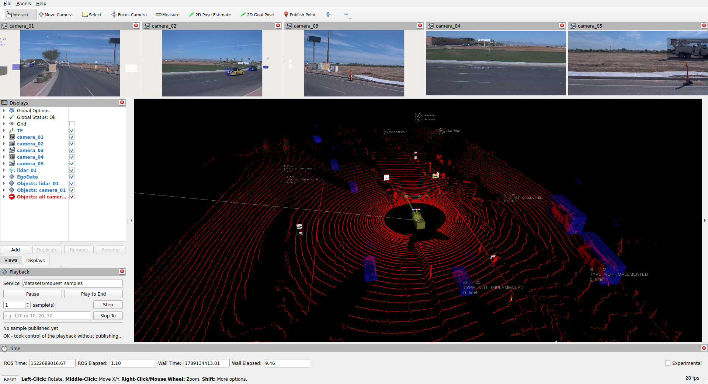
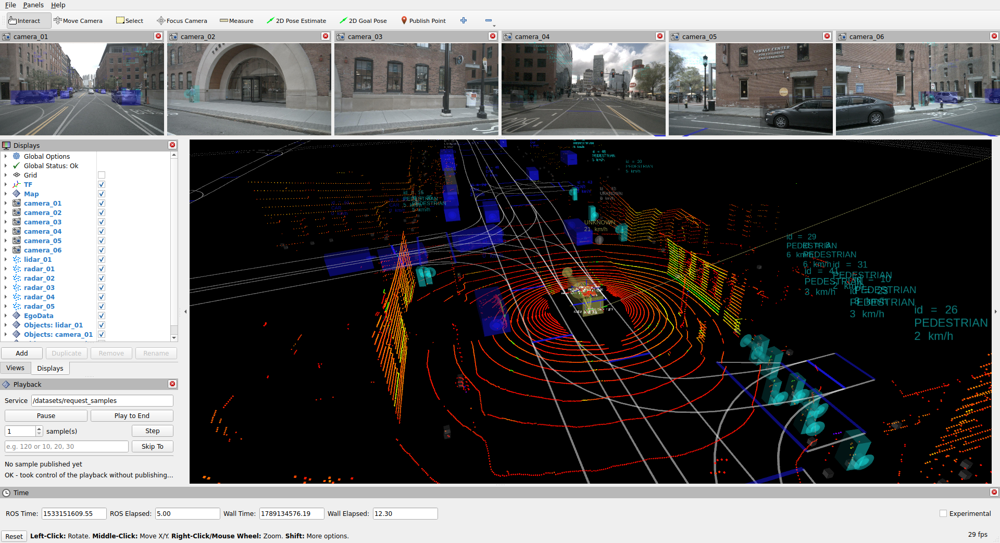
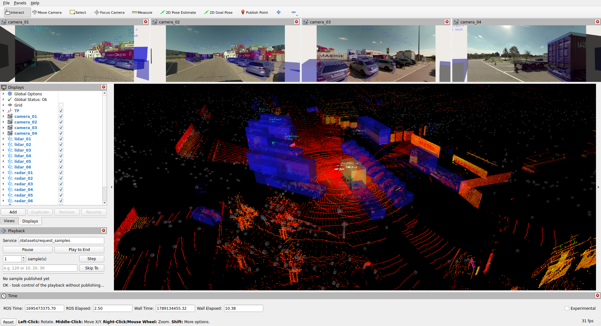
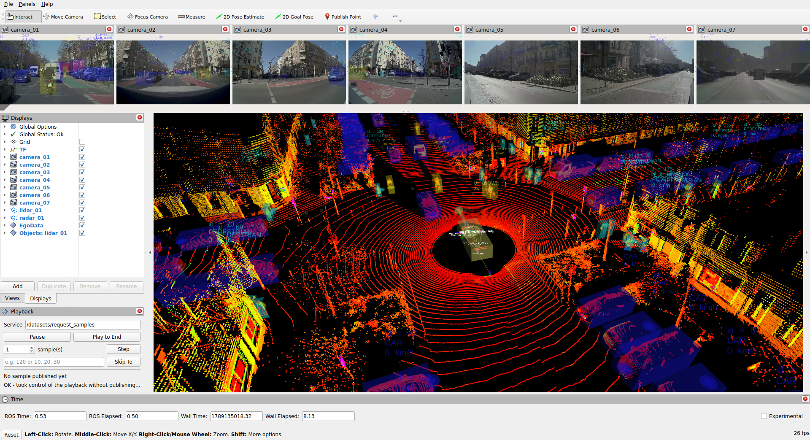
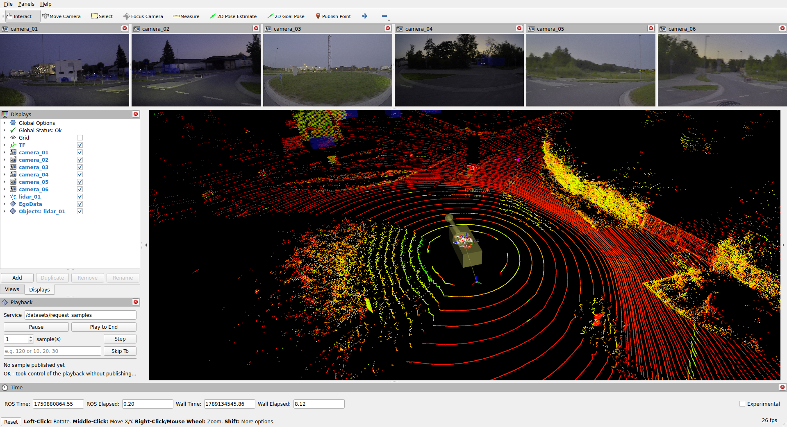

This repository will be part of the Autonomy.Hub Ecosystem
As part of the Autonomy.Hub Ecosystem, Autonomy.Datasets enables the Automated Driving community to easily test their automated driving building blocks across different datasets:
- 🔄 Unified ROS 2 Interface: Work with multiple datasets using the benefits of the ROS 2 ecosystem
- 📊 Comprehensive Benchmarks: Use the provided datasets with Autonomy.Benchmarks to benchmark building blocks across different automated driving tasks
- ⚡ Efficient Data Pipeline: Preprocessed Rosbag files ensure fast execution during development
- 🐳 Dockerized Environment: Reproducible setup with all dependencies included
- 🔌 Modular Architecture: Easy integration with other ROS 2 packages
Supported Datasets
This repository supports various automated driving datasets.
Contributions adding more datasets are welcome
| Dataset | Release | Countries | Samples | Preview |
|---|---|---|---|---|
| Waymo Open Dataset | August 2019 | United States | 158.081 Training39.987 Validation |  |
| nuScenes | March 2019 | United States (Boston), Singapore | 28.130 Training6.019 Validation |  |
| MAN TruckScenes | July 2024 | Germany | 747 scenes of 20 seconds each, annotated at 2 Hz with 6 lidars, 6 radars and 4 cameras |  |
| NVIDIA Physical AI AV Dataset (Alpamayo) | October 2025 | United States, Germany, France, Italy, Sweden, Spain, Portugal, Greece, Austria, Finland, Croatia, Netherlands, Denmark, Slovenia, Estonia, Slovakia, Belgium, Czechia, Lithuania, Poland, Romania, Luxembourg, Latvia, Hungary, Bulgaria | approx. 17.016.400 samples from 85.082 clips, each 20 seconds (10 Hz) with 1 lidar, 7 cameras and up to 10 radars |  |
| DrivIng | January 2026 | Germany (Ingolstadt) | 3 sequences (day, dusk, night) at 10 Hz with 1 lidar and 6 cameras |  |
🚀 Quick Start • 💻 Development • 📝 Documentation
🚀 Quick Start
The autonomy_datasets package is available in a pre-compiled Docker image. Start a container mounting your local dataset directory. Alternatively, use VS Code to open this repository in a Devcontainer.
Follow the instructions in the Supported Datasets section to obtain the dataset.
Run the following command in the container to visualize samples from the NVIDIA PhysicalAI AV Dataset:
This will download all selected scenes sequentially, write samples into Rosbags at $DATASET_DIR/nvidia_physicalai_av_dataset/bags/<version> while visualizing samples in Rviz. Rosbags are stored in a subfolder named after the version of the dataset conversion. Existing Rosbags of the current version are replayed instead of being generated again; a new version generates its Rosbags into its own subfolder.
💻 Development
Set up Development Environment
- Clone the repository. git clone https://github.com/thinking-cars/autonomy_datasets.git
- Initialize the
.openads-dev-environmentsubmodule containing development environment configuration.cd autonomy_datasetsgit submodule update --init --recursive
- Open the repository in Visual Studio Code. code .
- Install the recommended VS Code extensions.
Ctrl+Shift+P / Extensions: Show Recommended Extensions / Install Workspace Recommended Extensions (Cloud Download Icon)
- Reopen the repository in a Dev Container. Ctrl+Shift+P / Dev Containers: Rebuild and Reopen in Container
Build
Ctrl+Shift+B
Run Tests
Ctrl+Shift+P / Tasks: Run Test Task
📝 Documentation
Package and node interfaces are documented in the respective package READMEs listed below. Implementation details are found in the Source Code Documentation.
| Package | Description |
|---|---|
| autonomy_datasets | Integrates automated driving datasets into the ROS 2 ecosystem |
⚖️ Licensing
The source code in this repository is licensed under Apache-2.0, see [LICENSE](LICENSE). Container images provided by this repository may contain third-party software shipped with their own license terms.
⚠️ IMPORTANT DATASET LICENSE DISCLAIMER
This repository provides tools and interfaces for working with autonomous driving datasets. The actual datasets (nuScenes, Waymo Open Dataset, etc.) are NOT included and must be obtained separately.
Before using any dataset, you MUST:
- Register and accept the terms of use for each dataset you wish to use
- Download the datasets from their official sources
- Comply with all licensing terms and conditions of the respective dataset providers
Dataset-specific requirements:
- nuScenes: Register at nuScenes.org and agree to the nuScenes Terms of Use
- Waymo Open Dataset: Register at Waymo Open Dataset and agree to their License Agreement
- NVIDIA Physical AI Autonomous Vehicles Dataset: Register at HuggingFace and agree to the NVIDIA Autonomous Vehicles Dataset License Agreement
- DrivIng: Downloaded automatically from Harvard Dataverse; usage is subject to CC BY-NC-ND 4.0
- MAN TruckScenes: Downloaded automatically from the AWS Open Data registry; usage is subject to CC BY-NC-SA 4.0
🙏 Acknowledgements
This project is maintained by Thinking Cars. We appreciate contributions and are happy to discuss potential collaborations.